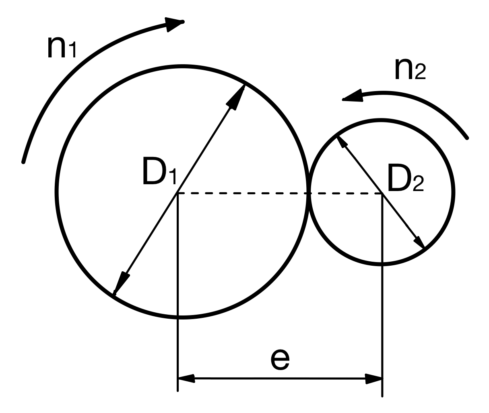
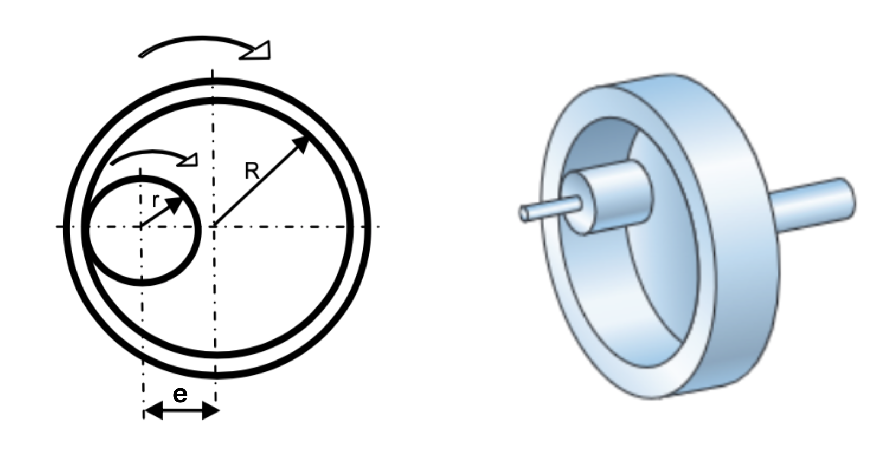
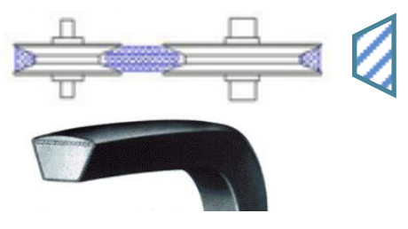
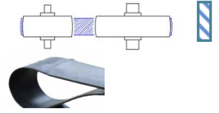
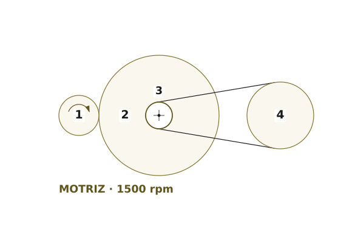
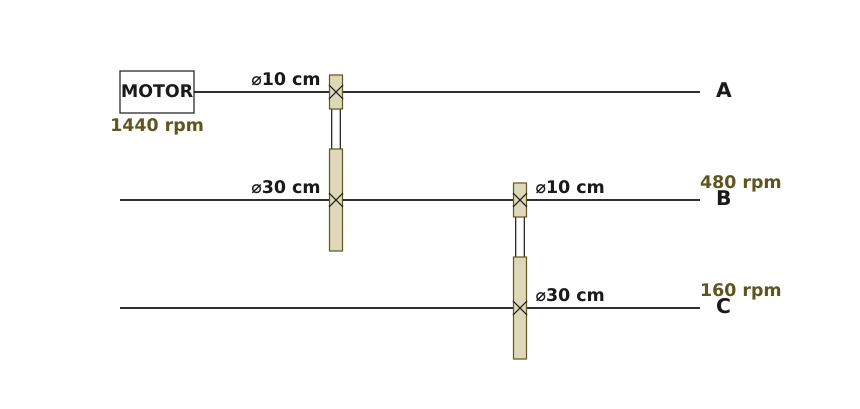

Definiciones y fórmulas comunes
Antes de analizar los mecanismos concretos, recordamos algunos conceptos y fórmulas que nos van a servir para todos los mecanismos de esta categoría.
Elemento motriz y elemento conducido
Llamamos elemento motriz al que inicia el movimiento y elemento conducido al que lo recibe.
Por convenio, denominaremos con el número 1 al elemento motriz y con el 2 al conducido. Si hay mas de dos elementos encadenados en un mismo mecanismo, los numeraremos por el orden en que se transmiten el movimiento entre ellos. Así, para cada pareja de ruedas que consideremos, la motriz siempre será la de número menor y la conducida la de número mayor.
Fórmula fundamental del movimiento
En todos los mecanismos de transmisión de movimiento circular mediante ruedas y poleas, se cumple la siguiente fórmula, que proviene de considerar que la velocidad tangencial en las dos ruedas debe ser la misma (no deslizan entre sí):
\[n_{1}\cdot D _{1}=n_{2}\cdot D _{2}\]
Donde:
- n1, n2: régimen de giro de las ruedas motriz y conducida, respectivamente, en revoluciones por minuto (rpm)
- D1, D2: diámetrosde las ruedas motriz y conducida, respectivamente. Pueden ir en cualquier unidad (mm, cm,..) siempre que los dos vayan en la misma.
Relación de transmisión (i)
Es la relación entre la velocidad de giro de la rueda conducida y la velocidad de giro de la rueda motriz. Se denomina con la letra "i".
Se puede expresar como la relación entre las revoluciones por minuto de ambas ruedas o, utilizando la fórmula anterior, como la relación entre los diámetros de ambas ruedas:
\[i=\frac{n_{2}}{n_{1}}=\frac{D_{1}}{D_{2}}\]
Fíjate en que, si la expresamos con los diámetros, hay que invertir el orden: en el numerador irá el de la motriz y en el denominador el de la conducida.
Según sea la relación de transmisión de un mecanismo, podemos clasificarlos en:
Mecanismos reductores de velocidad
Son aquellos en que la velocidad de giro de la conducida es menor que la de la motriz, por lo tanto i<1.
En estos mecanismos, la rueda motriz es más pequeña que la rueda conducida.
Mecanismos multiplicadores de velocidad
Son aquellos en que la velocidad de giro de la conducida es mayor que la de la motriz. Por lo tanto, i>1.
En estos mecanismos, la rueda motriz es más grande que la conducida.
Mecanismos directos
En estos mecanismos, la velocidad de giro no varía, siendo igual la de la motriz y la de la conducida (i=1).
Para que un mecanismo sea directo, sus ruedas motriz y conducida deben tener el mismo tamaño.
En general, mientras más pequeñas sean las ruedas, más rápido girarán (a cambio, lo harán con menos par que las ruedas grandes)
Ruedas de fricción
Este mecanismo consiste en transmitir el movimiento entre dos ruedas gracias a la fuerza de rozamiento. Para ello, las zonas de contacto deben estar fabricadas de un material con alto coeficiente de rozamiento, con objeto de evitar que se deslicen o patinen.
Para que la transmisión de potencia sea efectiva y no patinen las ruedas, debe ejercerse una fuerza axial (Fa) entre ellas que podemos calcular con la siguiente fórmula:
\[F_{a}=\frac{60P}{\pi \mu n_{1} D_{1}}\]
Donde:
- Fa: fuerza axial mínima a ejercer entre las ruedas para que no deslicen entre sí, en newtons (N).
- P: potencia a transmitir, en vatios (W)
- μ: coeficiente de rozamiento (entre 0 y 1, adimensional)
- n1: régimen de giro de la rueda motriz, en revoluciones por minuto (rpm)
- D1: diámetro de la rueda motriz, en metros (m)
Fíjate que, en esta fórmula, el valor del diámetro debe ir en metros obligatoriamente. Las constantes que aparecen en la fórmula (60 y π) están ahí como factor de conversión para poder poner n1 en rpm y no tener que trabajar con la velocidad angular ω1, que iría en rad/s.
Este mecanismo tiene algunas limitaciones importantes: sólo se pueden transmitir pequeñas potencias, ya que, si se intenta transmitir una gran potencia, las ruedas pueden deslizar entre sí y no se transmitirá correctamente el movimiento. Además, al funcionar por rozamiento y presión, las ruedas sufren un continuo desgaste.
Sus ventajas principales son que transmiten el movimiento de forma muy suave y que son muy fáciles de embragar y desembragar.
Existen tres tipos básicos de ruedas de fricción: exteriores, interiores y troncocónicas.
Ruedas de fricción exteriores
Ambas ruedas contactan entre sí mediante sus periferias, como se ve en la imagen:

Además de la relación de transmisión y de la fórmula fundamental del movimiento que ya hemos visto, un parámetro importante de las ruedas de fricción es la distancia entre ejes (e), que se calcula como el valor medio de los diámetros de la rueda motriz y la conducida:
\[e=\frac{D_{1}+D_{2}}{2}\]
Ruedas de fricción interiores
En este caso una de las ruedas es mucho mayor que la otra y se utiliza su superficie interior para transmitir el movimiento. Puedes ver un esquema de este mecanismo a continuación:

En este tipo de mecanismo, la rueda pequeña suele ser siempre la motriz.Teniendo en cuenta esto, podemos calcular la distancia entre ejes como:
\[e=\frac{D_{2}-D_{1}}{2}\]
Si la motriz fuese la rueda grande, la anterior expresión nos daría un resultado negativo. En ese caso simplemente tenemos que quitarle el signo menos y nos sirve el resultado para saber la distancia entre ejes.
Ruedas de fricción troncocónicas
Este tipo de ruedas de fricción se utilizan cuando necesitamos transmitir el movimiento entre dos ejes cuyas prolongaciones se cortan en un punto. Tienen la forma de tronco de cono, tal y como se muestra en la figura:

En cualquier punto de contacto de ambas ruedas, su velocidad tangencial es idéntica, por lo que se mantienen las mismas ecuaciones de la relación de transmisión y del movimiento estudiadas anteriormente.
Ahora no tiene sentido hablar de la distancia entre ejes, pero, en el caso de ruedas troncocónicas como las de la figura que transmiten movimiento entre ejes perpendiculares, sí podemos establecer una fórmula importante que nos permite calcular la relación de transmisión tan sólo conociendo el ángulo de la rueda motriz. Del esquema anterior podemos establecer que:
\[i=\frac{D_{1}}{D_{2}}=\frac{2r}{2R}=\frac{r}{R}=\tan \beta \]
En definitiva:
\[i=\tan \beta \]
Ejercicios de ruedas de fricción
Poleas y correas
Se denomina polea a la rueda que se utiliza en las transmisiones por medio de una correa y correa a la cinta o cuerda flexible unida por sus extremos que sirve para transmitir el movimiento de giro entre una rueda y otra.
Una transmisión por correa consta. al menos. de dos poleas y una correa, como se ve en la figura:

Este tipo de transmisión se emplea más que las ruedas, ya que tiene una mayor superficie de fricción y puede transmitir mayores esfuerzos. Además, permite transmitir movimiento entre ejes bastante alejados entre sísin necesidad de usar ruedas muy grandes.
Para que el rendimiento sea óptimo. las correas deben estar tensadas adecuadamente para que ejerzan la fuerza axial correcta, de tal forma que, si quedan flojas, patinarán sobre la polea y, si están muy tensadas, los apoyos se calentarán y sobrecargarán.
Tanto la fórmula fundamental del movimiento como las expresiones de la relación de transmisión son las que hemos visto al principio de esta sección y que servían para las ruedas de fricción, es decir:
\[n_{1}\cdot D _{1}=n_{2}\cdot D _{2}\]
\[i=\frac{n_{2}}{n_{1}}=\frac{D_{1}}{D_{2}}\]
Se pueden utilizar diferentes tipos de correas (con sus poleas adecuadas, por supuesto) según la aplicación. Las más utilizadas son las trapezoidales y las planas, aunque también pueden utilizarse de sección redonda en máquinas con velocidades muy lentas.
Correas trapezoidales
Son las más utilizadas para usos industriales. Transmiten mayores potencias que las otras porque tienen una superficie de contacto mayor, ya que aprovechan tanto la cara interna como las laterales:

Correas planas o rectangulares
Muy empleadas cuando no es necesario transmitir grandes potencias, como en casetes de cinta, o cuando hay que transmitir movimiento entre ejes que no son paralelos.

La forma curvada de la polea hace que la correa se autocentre y no se salga durante el giro.
En esta tabla puedes ver diferentes usos de este tipo de correa:

Trenes de poleas con correas
Normalmente en las máquinas tendremos varios mecanismos encadenados entre sí, por lo que es importante saber sus peculiaridades. Cuando todos los mecanismos de la cadena son de tipo poleas con correas, al conjunto se le denomina tren de poleas con correas. En esta imagen tienes un ejemplo:

Fíjate que hemos nombrado a las diferentes poleas siguiendo nuestro criterio ya comentado: en el orden en el que se trasmiten el movimiento. En este ejemplo, la polea motriz es la 1 y el movimiento se va transmitiendo hasta llegar a la última polea, la 7, que es la de salida del sistema.
En estos casos, debes tener en cuenta lo siguiente:
- Las poleas que están unidas mediante una correa cumplen la formula fundamental del movimiento que ya conocemos:
\[n_{1}\cdot D_{1}=n_{2}\cdot D_{2}\]
\[n_{3}\cdot D_{3}=n_{4}\cdot D_{4}\]
\[n_{5}\cdot D_{5}=n_{6}\cdot D_{6}\]
- Las poleas que giran solidariamente en el mismo eje, no cumplen la fórmula anterior. Simplemente giran a la misma velocidad, independientemente de su diámetro, por lo que su fórmula será:
\[\require{colorv2} \color{red} {n_{2}\cdot D_{2}\neq n_{3}\cdot D_{3}}\ \ \Rightarrow \ \ n_{2}=n_{3}\]
\[\color{red} {n_{4}\cdot D_{4}\neq n_{5}\cdot D_{5}}\ \ \Rightarrow \ \ n_{4}=n_{5}\]
\[\color{red} {n_{6}\cdot D_{6}\neq n_{7}\cdot D_{7}}\ \ \Rightarrow \ \ n_{6}=n_{7}\]
- La fórmula de la relación de transmisión en función del número de vueltas por minuto siempre se cumple, para cualquier par de poleas, ya estén unidas por una correa o no:
\[\\i_{1-2}=\frac{n_{2}}{n_{1}}\ \ ||\ \ i_{2-3}=\frac{n_{3}}{n_{2}} \ \ ||\ \
i_{2-4}=\frac{n_{4}}{n_{2}} \ \ ||\ \ i_{1-7}=\frac{n_{7}}{n_{1}}\]
- La fórmula de la relación de transmisión en función de los diámetros, solo se cumple si las poleas están unidas por una correa.
\[i_{1-2}=\frac{D_{1}}{D_{2}}\ \ ||\ \ \color{Red} {i_{2-3}\neq \frac{D_{2}}{D_{3}}}\]
\[i_{3-4}=\frac{D_{3}}{D_{4}}\ \ ||\ \ \color{Red} {i_{4-5}\neq \frac{D_{4}}{D_{5}}}\]
\[i_{5-6}=\frac{D_{5}}{D_{6}}\ \ ||\ \ \color{Red} {i_{6-7}\neq \frac{D_{6}}{D_{7}}}\]
- Si las poleas giran en el mismo eje, al ser sus velocidades iguales, su relación de transmisión es directamente igual a uno.
\[i_{2-3}=i_{4-5}=i_{6-7}=1\]
- La relación de transmisión global(entre la última rueda conducida y la primera motriz) coincide con el producto de las relaciones de transmisión intermediasde la cadena:
\[i_{1-7}=i_{1-2}\cdot i_{2-3}\cdot i_{3-4}\cdot i_{4-5}\cdot i_{5-6}\cdot i_{6-7}\]
Esta última fórmula se demuestra de forma trivial si sustituyes las relaciones de transmisión intermedias por su expresión en función de los números de revoluciones por minuto (recuerda que esa expresión se puede aplicar en todas las parejas, independientemente de si están conectadas entre sí o no):
\[\require{cancel} i_{1-2}\cdot i_{2-3}\cdot i_{3-4}\cdot i_{4-5}\cdot i_{5-6}\cdot i_{6-7}=\frac{\cancel{n_{2}}}{n_{1}}\cdot \frac{\cancel{n_{3}}}{\cancel{n_{2}}}\cdot \frac{\cancel{n_{4}}}{\cancel{n_{3}}}\cdot \frac{\cancel{n_{5}}}{\cancel{n_{4}}}\cdot \frac{\cancel{n_{6}}}{\cancel{n_{5}}}\cdot \frac{n_{7}}{\cancel{n_{6}}}=\frac{n_{7}}{n_{1}}=i_{1-7}\]
Ejercicio resuelto: un tren que mezcla fricción y correa
Una máquina lleva dos ruedas de fricción exteriores, la 1 (motriz) y la 2. En el mismo eje de la rueda 2 va montada la polea 3, que arrastra por correa a la polea 4. La rueda 1 gira en sentido horario.
Datos: D1 = 30 cm; D2 = 90 cm; D3 = 20 cm; D4 = 50 cm; n1 = 1500 rpm.

a) Sentido de giro de los cuatro elementos. b) Velocidad de la polea 4. c) Relación de transmisión global. d) Distancia entre los ejes de las ruedas 1 y 2.
Ver la resolución paso a paso
Paso 1. Separa el tren en etapas y localiza los ejes compartidos.
Aquí está la clave de todo el problema y no tiene nada que ver con las fórmulas: hay dos etapas (1-2 por fricción y 3-4 por correa) y tres ejes, porque la rueda 2 y la polea 3 comparten el suyo. Dos ruedas en el mismo eje giran a la misma velocidad, así que n3 = n2. Es el puente entre las dos etapas.
Paso 2. Sentidos de giro.
En el contacto por fricción, las dos ruedas giran al revés: si la 1 va en sentido horario, la 2 va en antihorario. La polea 3 va en el mismo eje que la 2, luego también antihorario. Y la correa, si es abierta (sin cruzar), mantiene el sentido: la 4 gira también en antihorario.
Paso 3. Primera etapa: de la rueda 1 a la 2.
Tanto en las ruedas de fricción como en las poleas con correa se conserva la velocidad tangencial, así que vale la misma fórmula:
\[n_{1}\cdot D_{1}=n_{2}\cdot D_{2}\]
Despejando: n2 = 1500 · 30 / 90 = 500 rpm. Y por compartir eje, n3 = 500 rpm.
Paso 4. Segunda etapa: de la polea 3 a la 4.
n4 = n3 · D3 / D4 = 500 · 20 / 50 = 200 rpm.
Paso 5. Relación de transmisión global.
Es la de salida entre la de entrada, sin pasar por las intermedias:
\[i=\frac{n_{salida}}{n_{entrada}}\]
Sustituyendo: i = 200 / 1500 = 0,13.
Como i < 1, el sistema es reductor: la salida gira más despacio que el motor. También se podía calcular multiplicando las dos parciales, 30/90 · 20/50, que da lo mismo.
Paso 6. Distancia entre los ejes de las ruedas 1 y 2.
Ojo: esto solo se pregunta de las ruedas de fricción, porque se tocan. En las poleas la correa permite ponerlas donde quieras. Al ser exteriores:
\[e=\frac{D_{1}+D_{2}}{2}\]
Sustituyendo: e = (30 + 90) / 2 = 60 cm.
Resultados: antihorario las tres conducidas; n4 = 200 rpm; i = 0,13 (reductor); e = 60 cm.
Ejercicio resuelto: elegir las poleas cuando no cabe una sola etapa
Un motor gira a 1440 rpm y tiene montada una polea de 10 cm de diámetro. Necesitamos mover un eje a 160 rpm. En el hueco de la máquina no cabe ninguna polea de más de 60 cm de diámetro.
a) ¿Se puede resolver con una sola etapa? b) Si no, diséñalo con dos etapas iguales y di qué poleas hacen falta y a qué velocidad gira el eje intermedio.
Ver la resolución paso a paso
Paso 1. Calcula primero lo que te piden en total.
La relación de transmisión que necesitamos es
\[i=\frac{n_{salida}}{n_{entrada}}\]
Sustituyendo: i = 160 / 1440 = 1/9.
O sea, hay que dividir la velocidad entre 9.
Paso 2. Prueba con una sola etapa y comprueba si cabe.
Con una etapa, n1·D1 = n2·D2, así que D2 = 10 · 1440 / 160 = 90 cm. No cabe: el límite son 60 cm. Por esto existen los trenes: no por capricho, sino porque una reducción grande de golpe obliga a una rueda enorme.
Paso 3. Reparte la reducción entre dos etapas.
Las relaciones parciales se multiplican, no se suman. Si las dos etapas son iguales, cada una vale ie, y
\[i_{e}\cdot i_{e}=i_{total}\]
Es decir, ie² = 1/9, así que ie = 1/3.
Cada etapa debe dividir la velocidad entre 3.
Paso 4. Traduce cada etapa a diámetros.
Primera etapa: polea motriz de 10 cm → conducida de 10 · 3 = 30 cm. En ese eje intermedio montamos otra polea de 10 cm, que arrastra a una última de 30 cm. Las cuatro caben de sobra en 60 cm.
Paso 5. Comprueba el resultado recorriendo el tren.
Eje intermedio: 1440 · 10/30 = 480 rpm. Eje de salida: 480 · 10/30 = 160 rpm. Es lo que pedía el enunciado, así que el diseño vale. Así queda el montaje:

Resultado: dos etapas de 10 cm → 30 cm; el eje intermedio gira a 480 rpm.
Ejercicios de poleas con correa
Verdadero o falso
Decide si cada afirmación es verdadera o falsa y lee la explicación aunque hayas acertado: aquí no se trata de saber las fórmulas, sino de saber cuándo se puede usar cada una.
00:00:
Lista desordenada
Ordena los pasos para resolver un tren que mezcla ruedas de fricción y poleas con correa. La mayor parte del trabajo está antes de escribir la primera fórmula.
- Recorrer el tren y numerar las ruedas en el orden en que se van transmitiendo el movimiento
- Separar el tren en etapas y marcar qué ruedas comparten árbol
- Aplicar la fórmula fundamental en la primera etapa, la que recibe el movimiento del motor
- Pasar la velocidad obtenida a la rueda que comparte árbol con ella, que gira a la misma velocidad
- Repetir el cálculo etapa a etapa hasta llegar a la rueda de salida
- Calcular la relación global como la velocidad de salida entre la de entrada y comprobar que coincide con el producto de las parciales